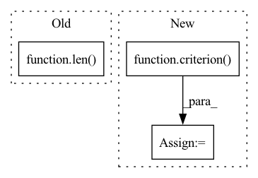

Pattern ID :6081

Before Change
// print(f"Train set: Average loss: {train_loss/ len(data):.4f}, "
// f"Accuracy: {correct}/{len(data)} ({correct/len(data):.2f}%)")
return train_loss / len(data), correct / len(data) // 返回平均损失和平均准确率
After Change
//训练集测试损失值和准确率
train_output=model(data.to(torch.float32))
train_loss=criterion(train_output,target).item()
prediction = train_output.argmax(dim=1, keepdim=True) // 将one-hot输出转为单个标量
correct = prediction.eq(target.view_as(prediction)).sum().item() // 比较得到准确率
train_acc=100. * correct/len(data)
In pattern: SUPERPATTERN
Frequency: 4
Non-data size: 3
Instances
Fragment ID: 21076231
Project Name: jefffffu/awesome-differential-privacy-and-meachine-learning
Commit Name: 2ebbe536f3de4fe260e92dfa2a45dd3bab30a414
Time: 2022-12-06
Author: 1193147851@qq.com
File Name: train_and_validation/train_with_dp.py
M Class Name: AnonimousClass
N Class Name: AnonimousClass
M Method Name: train_dynamic_add_noise(4)
N Method Name: train_dynamic_add_noise(4)
M Parent Class:
N Parent Class:
M File Name: train_and_validation/train_with_dp.py
N File Name: train_and_validation/train_with_dp.py
M Start Line: 10
M End Line: 40
N Start Line: 13
N End Line: 45
'>
Before Change
if args.model != "Transformer":
hidden = model.init_hidden(args.batch_size)
length = len(range(0, train_data.size(0) - 1, args.bptt))
with tqdm(total=length,
desc="Epoch {:2d}/{:2d}".format(epoch + 1, args.epochs),
disable=not args.verbose) as t:
After Change
else:
hidden = repackage_hidden(hidden)
output, hidden = model(data, hidden)
loss = criterion(output, target)
loss.backward()
train_loss.update(loss)
//total_loss += loss.item()
'>
Fragment ID: 21076232
Project Name: gpauloski/kfac_pytorch
Commit Name: 22a07a821dbaeffdcc00bb4614c8967b44803eeb
Time: 2020-04-09
Author: gpauloski@yahoo.com
File Name: examples/pytorch_wikitext_rnn.py
M Class Name: AnonimousClass
N Class Name: AnonimousClass
M Method Name: train(10)
N Method Name: train(9)
M Parent Class:
N Parent Class:
M File Name: examples/pytorch_wikitext_rnn.py
N File Name: examples/pytorch_wikitext_rnn.py
M Start Line: 264
M End Line: 309
N Start Line: 246
N End Line: 279
'>
Before Change
if args.model != "Transformer":
hidden = model.init_hidden(args.batch_size)
length = len(range(0, data_source.size(0) - 1, args.bptt))
verbose = args.verbose if epoch is not None else False
with tqdm(total=length,
bar_format="{l_bar}{bar}|{postfix}",
After Change
else:
output, hidden = model(data, hidden)
hidden = repackage_hidden(hidden)
loss = criterion(output, target)
val_loss.update(loss)
t.update(1)
t.set_postfix_str("\b\b val_loss: {:4.2f}, val_ppl: {:6.2f}".format(
'>
Fragment ID: 21076235
Project Name: gpauloski/kfac_pytorch
Commit Name: 22a07a821dbaeffdcc00bb4614c8967b44803eeb
Time: 2020-04-09
Author: gpauloski@yahoo.com
File Name: examples/pytorch_wikitext_rnn.py
M Class Name: AnonimousClass
N Class Name: AnonimousClass
M Method Name: evaluate(5)
N Method Name: evaluate(5)
M Parent Class:
N Parent Class:
M File Name: examples/pytorch_wikitext_rnn.py
N File Name: examples/pytorch_wikitext_rnn.py
M Start Line: 226
M End Line: 258
N Start Line: 209
N End Line: 242
'>
Before Change
ynt_featmap = self.model.get_fm_before_outlayer(ynt_img)
l2_loss += criterion(ynt_featmap, yt_avg_featmap)
l2_loss = torch.div(l2_loss, len(self.ynt_sub_inds))
print("Epoch {} | MSE Loss {}".format(epoch, l2_loss))
l2_loss.backward(retain_graph=True)
optimizer.step()
After Change
ynt_img = self.ynt_imgs[self.ynt_sub_inds].cuda()
ynt_img = ynt_img * (1-self.mask) + self.mask * torch.sigmoid(self.mark)
ynt_featmap = self.model.get_fm_before_outlayer(ynt_img)
l2_loss = criterion(ynt_featmap, yt_avg_featmap.clone().detach())
print("Epoch {} | MSE Loss {}".format(epoch, l2_loss))
l2_loss.backward()
optimizer.step()
'>
Fragment ID: 21076236
Project Name: ain-soph/trojanzoo
Commit Name: ab9477e1b0e41c6abe9e11d7345b20233d61b9d9
Time: 2020-07-01
Author: zxx5113@lrs-twang01.ist.psu.edu
File Name: trojanzoo/attack/backdoor/latent_backdoor.py
M Class Name: Latent_Backdoor
N Class Name: Latent_Backdoor
M Method Name: generate_trigger(1)
N Method Name: generate_trigger(1)
M Parent Class: BadNet
N Parent Class: BadNet
M File Name: trojanzoo/attack/backdoor/latent_backdoor.py
N File Name: trojanzoo/attack/backdoor/latent_backdoor.py
M Start Line: 183
M End Line: 256
N Start Line: 138
N End Line: 204